<!doctype html>
<html lang="en">
<head>
<meta charset="utf-8">
<title>sentimental stories — Alder Cote</title>
<meta name="viewport" content="width=device-width, initial-scale=1">
</head>
<body>
<style>:root{--page:#111111;color-scheme:dark}html,body{background:var(--page)}body{margin:0;overflow-x:hidden}#app{width:max-content;margin:0 auto}a{cursor:pointer}
body{margin:0}
.sp{font-family:'Times New Roman', Times, serif;color:#FCFBF7}
.sp a{color:#FCFBF7}
.lab{margin:0;font-family:Arial, Helvetica, sans-serif;font-size:10px;letter-spacing:.1em;text-transform:uppercase}
.chip{display:inline-block;background:#111111;color:#FCFBF7;font-family:Arial, Helvetica, sans-serif;font-size:10px;letter-spacing:.1em;text-transform:uppercase;padding:4px 7px;white-space:nowrap}
.ov{display:inline-flex;align-items:center;justify-content:center;border:1.5px solid #111111;border-radius:50%;font-family:Arial, Helvetica, sans-serif;font-size:13px;text-decoration:none;box-sizing:border-box}
.cl{cursor:url(./clef-cursor.png) 12 44, pointer}
.scr{scrollbar-width:none}.scr::-webkit-scrollbar{display:none}
.tile{position:absolute;overflow:hidden}
.tile video,.tile img{width:100%;height:100%;object-fit:cover;display:block}
.fr{position:absolute;top:0;overflow:hidden;box-shadow:inset -1px 0 0 #111111}
.fr img{width:100%;height:100%;object-fit:cover;display:block;transition:transform .6s cubic-bezier(.32,.72,0,1)}
.fr:hover img{transform:scale(1.06)}

@keyframes hop{0%{transform:translateY(0) rotate(-6deg)}50%{transform:translateY(-6px) rotate(6deg)}}html,body{height:100%;overflow:hidden}#app{margin:0}.sp{height:var(--acvh,900px)!important}</style>
<script src="./site.js"></script>
<div id="app"></div>
<script type="text/x-template" id="tpl0"><div class="sp" style="width: 1440px; height: 900px; position: relative; overflow: hidden; background: #111111"><video ref="{{main}}" src="./ss-film.mp4" poster="./ss-film.jpg" autoplay muted loop playsinline disablepictureinpicture style="position: absolute; inset: 0; width: 100%; height: 100%; object-fit: cover; display: block; pointer-events: none"></video><div style="position: absolute; inset: 0; background: #111111; opacity: {{dim}}; pointer-events: none"></div><div class="scr" onScroll="{{scroll}}" style="position: absolute; inset: 0; overflow-y: auto"><section style="position: relative; height: 900px"><div style="position: absolute; left: 0; bottom: 0; width: 1440px; height: 460px; background: linear-gradient(rgba(17,17,17,0), rgba(17,17,17,0.62)); pointer-events: none"></div><div style="position: absolute; left: 40px; bottom: 136px"><p class="lab">alder cote · 2 / 5</p><h1 style="margin: 12px 0 0; font-weight: 400; font-size: 76px; line-height: 0.98">sentimental stories</h1></div><div style="position: absolute; right: 40px; bottom: 150px; display: flex; gap: 8px"><a href="#" class="ov" style="height: 40px; padding: 0 14px; min-width: 48px; background: #4FB848; color: #111111">spotify</a><a href="#" class="ov" style="height: 40px; padding: 0 14px; min-width: 48px; background: #F2C230; color: #111111">apple music</a><a href="#" class="ov" style="height: 40px; padding: 0 10px; min-width: 48px; background: #E8173A; color: #FFFFFF">ig</a><a href="#" class="ov" style="height: 40px; padding: 0 10px; min-width: 48px; background: #0000EE; color: #FFFFFF">tok</a></div><p class="lab" style="position: absolute; left: 50%; transform: translateX(-50%); bottom: 108px; opacity: {{cue}}; transition: opacity .4s">scroll ↓</p><div style="position: absolute; left: 0; bottom: 0; width: 1440px; height: 84px"><div class="fr cl" onClick="{{go0}}" style="left: 0.0px; width: 160.0px; height: 84px">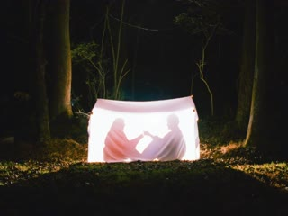</div><div class="fr cl" onClick="{{go1}}" style="left: 160.0px; width: 160.0px; height: 84px">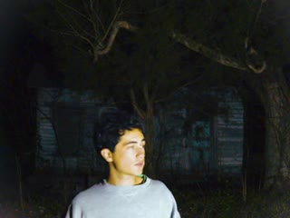</div><div class="fr cl" onClick="{{go2}}" style="left: 320.0px; width: 160.0px; height: 84px">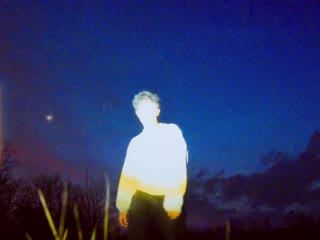</div><div class="fr cl" onClick="{{go3}}" style="left: 480.0px; width: 160.0px; height: 84px">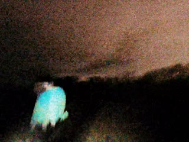</div><div class="fr cl" onClick="{{go4}}" style="left: 640.0px; width: 160.0px; height: 84px">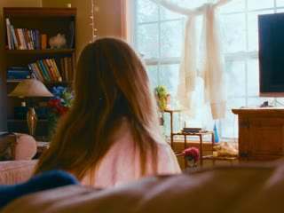</div><div class="fr cl" onClick="{{go5}}" style="left: 800.0px; width: 160.0px; height: 84px">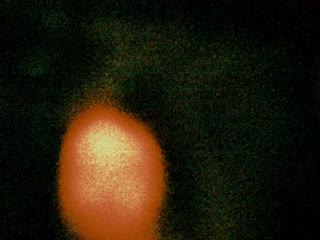</div><div class="fr cl" onClick="{{go6}}" style="left: 960.0px; width: 160.0px; height: 84px">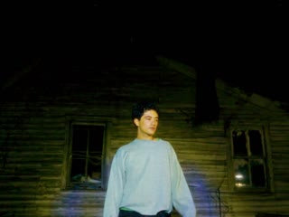</div><div class="fr cl" onClick="{{go7}}" style="left: 1120.0px; width: 160.0px; height: 84px">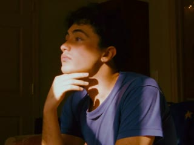</div><div class="fr cl" onClick="{{go8}}" style="left: 1280.0px; width: 160.0px; height: 84px">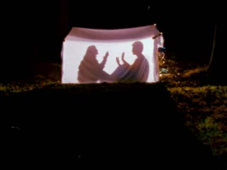</div><div style="position: absolute; left: {{px}}px; top: -8px; width: 2px; height: 92px; background: #E8173A; pointer-events: none"></div><span class="chip" style="position: absolute; left: {{px}}px; top: -30px; pointer-events: none">{{tc}}</span></div></section><section style="position: relative; padding: 120px 64px 120px"><p class="lab" style="margin-bottom: 30px">01 — 44</p><div style="display: flex; justify-content: space-between; font-size: 21px; line-height: 31px"><div style="flex: none; white-space: nowrap"><p style="margin: 0">'cause i don't know</p><p style="margin: 0">the last time that we've spoken</p><p style="margin: 0">but one day you’ll see me</p><p style="margin: 0">and want back</p><p style="margin: 0">the boy you’ve broken</p><p style="margin: 0">sentimental stories in the walls</p><p style="margin: 0">running through the rain until we fall</p><p style="margin: 0">sentimental stories in the walls</p><p style="margin: 0">running through the rain</p><p style="margin: 0">until we fall</p><p style="margin: 0">‘cause heaven only knows</p><p style="margin: 0">where we left off</p><p style="margin: 0">how can i ignore these</p><p style="margin: 0">sentimental stories</p><p style="margin: 0">tell me my darling</p></div><div style="flex: none; white-space: nowrap"><p style="margin: 0">how can i still</p><p style="margin: 0">love you from far away</p><p style="margin: 0">teach me your language</p><p style="margin: 0">and all of the phrases</p><p style="margin: 0">your parents say</p><p style="margin: 0">show me why you leave</p><p style="margin: 0">the frame glass broken</p><p style="margin: 0">tore down the ceiling</p><p style="margin: 0">and left all the windows open</p><p style="margin: 0">i still talk in my sleep</p><p style="margin: 0">while your pictures</p><p style="margin: 0">above the door</p><p style="margin: 0">you’re still staring at me</p><p style="margin: 0">and i can’t believe</p><p style="margin: 0">you don't want me anymore</p></div><div style="flex: none; white-space: nowrap"><p style="margin: 0">sentimental stories</p><p style="margin: 0">in the walls</p><p style="margin: 0">running through the rain</p><p style="margin: 0">until we fall</p><p style="margin: 0">cause heaven only knows</p><p style="margin: 0">where we left off</p><p style="margin: 0">how can i ignore these</p><p style="margin: 0">sentimental stories</p><p style="margin: 0">tell me my darling</p><p style="margin: 0">how can i still love you</p><p style="margin: 0">from far away</p><p style="margin: 0">show me your history</p><p style="margin: 0">the playhouse that you</p><p style="margin: 0">and your sisters made</p></div></div></section><section style="position: relative; width: 1440px; height: 585.8px; background: #111111"><div class="tile cl" onMouseEnter="{{cIn0}}" onMouseLeave="{{cOut0}}" style="left: 0.0px; top: 0; width: 781.0px; height: 585.8px; box-shadow: inset -1px 0 0 #111111"><video src="./ss-announce.mp4" poster="./ss-announce.jpg" muted loop playsinline preload="none" disablepictureinpicture ref="{{cR0}}"></video><span class="chip" style="position: absolute; left: 8px; bottom: 8px">.388 · 07:21 ▶</span></div><div class="tile cl" onMouseEnter="{{cIn1}}" onMouseLeave="{{cOut1}}" style="left: 781.0px; top: 0; width: 329.5px; height: 585.8px; box-shadow: inset -1px 0 0 #111111"><video src="./ss-int1.mp4" poster="./ss-int1.jpg" muted loop playsinline preload="none" disablepictureinpicture ref="{{cR1}}"></video><span class="chip" style="position: absolute; left: 8px; bottom: 8px">.142 · 12:44 ▶</span></div><div class="tile cl" onMouseEnter="{{cIn2}}" onMouseLeave="{{cOut2}}" style="left: 1110.5px; top: 0; width: 329.5px; height: 585.8px; box-shadow: inset -1px 0 0 #111111"><video src="./ss-int2.mp4" poster="./ss-int2.jpg" muted loop playsinline preload="none" disablepictureinpicture ref="{{cR2}}"></video><span class="chip" style="position: absolute; left: 8px; bottom: 8px">.897 · 17:07 ▶</span></div></section><section style="position: relative; width: 1440px; height: 830.0px; background: #111111; border-top: 4px solid #111111"><div class="tile" style="left: 0.0px; top: 0.0px; width: 146.0px; height: 259.7px"></div><div class="tile" style="left: 150.0px; top: 0.0px; width: 194.8px; height: 259.7px"></div><div class="tile" style="left: 348.8px; top: 0.0px; width: 194.8px; height: 259.7px"></div><div class="tile" style="left: 547.5px; top: 0.0px; width: 145.2px; height: 259.7px"></div><div class="tile" style="left: 696.7px; top: 0.0px; width: 345.8px; height: 259.7px">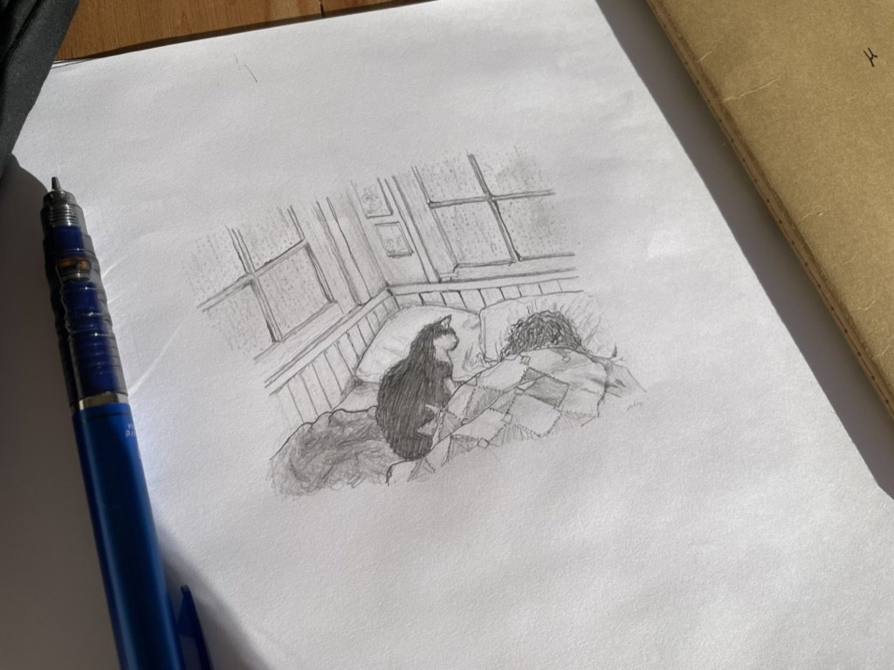</div><div class="tile" style="left: 1046.5px; top: 0.0px; width: 194.8px; height: 259.7px">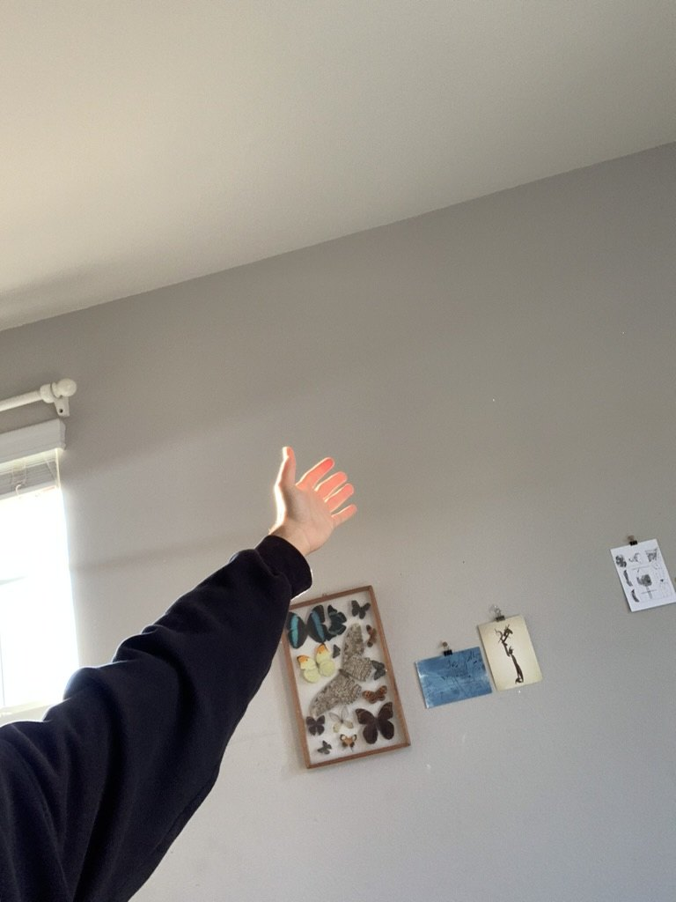</div><div class="tile" style="left: 1245.2px; top: 0.0px; width: 194.8px; height: 259.7px"></div><div class="tile" style="left: 0.0px; top: 263.7px; width: 196.7px; height: 262.3px">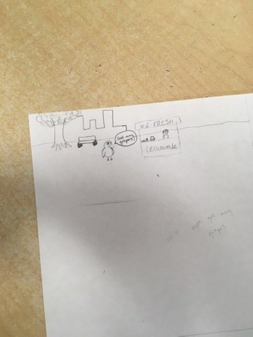</div><div class="tile" style="left: 200.7px; top: 263.7px; width: 466.2px; height: 262.3px"></div><div class="tile" style="left: 670.9px; top: 263.7px; width: 262.3px; height: 262.3px">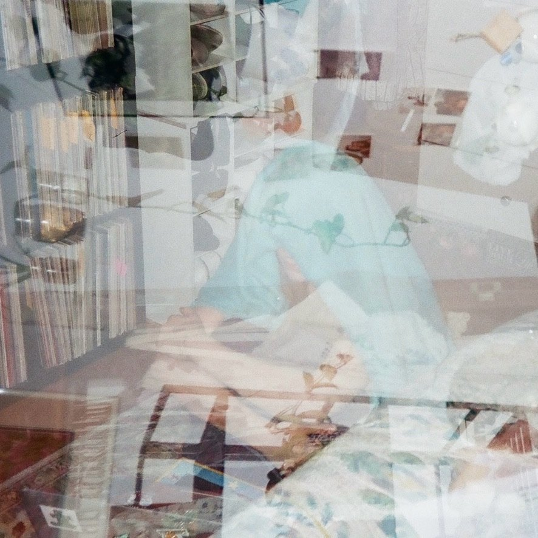</div><div class="tile" style="left: 937.2px; top: 263.7px; width: 121.3px; height: 262.3px"></div><div class="tile" style="left: 1062.5px; top: 263.7px; width: 377.5px; height: 262.3px"></div><div class="tile" style="left: 0.0px; top: 530.0px; width: 452.5px; height: 300.0px"></div><div class="tile" style="left: 456.5px; top: 530.0px; width: 225.0px; height: 300.0px"></div><div class="tile" style="left: 685.5px; top: 530.0px; width: 225.0px; height: 300.0px"></div><div class="tile" style="left: 914.5px; top: 530.0px; width: 356.0px; height: 300.0px"></div></section><section style="position: relative; height: 120px; background: #FCFBF7; color: #111111; display: flex; align-items: center; justify-content: space-between; padding: 0 40px; box-sizing: border-box"><a href="first-night-of-my-life.html" style="color: #0000EE; font-size: 20px">← first night of my life</a><div style="display: flex; gap: 8px"><a href="#" class="ov" style="height: 38px; padding: 0 14px; min-width: 46px; background: #4FB848; color: #111111">spotify</a><a href="#" class="ov" style="height: 38px; padding: 0 14px; min-width: 46px; background: #F2C230; color: #111111">apple music</a><a href="#" class="ov" style="height: 38px; padding: 0 10px; min-width: 46px; background: #E8173A; color: #FFFFFF">ig</a><a href="#" class="ov" style="height: 38px; padding: 0 10px; min-width: 46px; background: #0000EE; color: #FFFFFF">tok</a></div><a href="cant-you-just-hold-me.html" style="color: #0000EE; font-size: 20px">can’t you just hold me? →</a></section></div><div style="position: absolute; left: 0; top: 0; width: 1440px; height: 120px; background: linear-gradient(rgba(17,17,17,0.78), rgba(17,17,17,0)); opacity: {{topO}}; transition: opacity .3s; pointer-events: none; z-index: 4"></div><div style="position: absolute; left: 40px; top: 30px; display: flex; align-items: baseline; gap: 12px; z-index: 5"><a href="index.html" style="font-size: 24px; text-decoration: none">alder cote</a><a href="songs.html" style="font-family: Arial, Helvetica, sans-serif; font-size: 11px; text-decoration: none">/ songs</a><span style="font-family: Arial, Helvetica, sans-serif; font-size: 11px">/ sentimental-stories</span></div><button onClick="{{toggle}}" aria-label="{{soundLab}}" title="{{soundLab}}" style="position: absolute; right: 36px; top: 22px; z-index: 6; background: none; border: 0; padding: 6px; cursor: pointer"><svg width="30" height="40" viewBox="0 0 30 40" style="display: block; overflow: visible; animation: {{noteAnim}}" aria-hidden="true"><ellipse cx="9" cy="32" rx="7.5" ry="5.5" transform="rotate(-22 9 32)" fill="#FCFBF7"/><rect x="15" y="4" width="2" height="28" fill="#FCFBF7"/><path d="M17 4 C 20 10, 27 12, 26 22 C 25 17, 21 15, 17 14 Z" fill="#FCFBF7"/><line x1="2" y1="40" x2="29" y2="2" stroke="#FCFBF7" stroke-width="1.6" style="display: {{strike}}"/></svg></button></div></script>
<script>

class C0 extends DCLogic {
  constructor(props) { super(props); this.state = { sound: false, t: 0, dim: 0, y: 0 }; }
  renderVals() {
    const ch = [1.84, 5.52, 9.2, 12.88, 16.57, 20.25, 23.93, 27.61, 31.29], DUR = 33.13, on = this.state.sound, o = {};
    const tc = (t) => String(Math.floor(t / 60)).padStart(2, '0') + ':' + String(Math.floor(t % 60)).padStart(2, '0');
    o.main = (el) => { if (!el || this.v === el) return; this.v = el;
      el.addEventListener('timeupdate', () => { if (Math.abs(el.currentTime - this.state.t) > 0.2) this.setState({ t: el.currentTime }); }); };
    o.px = (Math.min(1, this.state.t / DUR) * 1440).toFixed(1); o.tc = tc(this.state.t);
    ch.forEach((s, i) => { o['go' + i] = () => { const v = this.v; if (v) { v.currentTime = s + 0.05; const p = v.play(); if (p && p.catch) p.catch(() => {}); } }; });
    o.scroll = (e) => { const y = e.target.scrollTop, d = Math.max(0, Math.min(0.62, (y - 160) / 560 * 0.62));
      if (Math.abs(d - this.state.dim) > 0.015 || (y > 40) !== (this.state.y > 40)) this.setState({ dim: d, y }); };
    o.dim = this.state.dim.toFixed(3); o.cue = this.state.y > 40 ? 0 : 1; o.topO = this.state.y > 40 ? 1 : 0;
    o.toggle = () => { const v = this.v; if (!v) return; v.muted = on; if (!on) { const p = v.play(); if (p && p.catch) p.catch(() => {}); } this.setState({ sound: !on }); };
    o.soundLab = on ? 'sound off' : 'sound on'; o.noteAnim = on ? 'hop .5s step-end infinite' : 'none'; o.strike = on ? 'none' : 'inline';
    [0, 1, 2].forEach((i) => {
      o['cR' + i] = (el) => { this.c = this.c || {}; if (el) this.c[i] = el; };
      o['cIn' + i] = () => { const c = (this.c || {})[i]; if (!c) return; if (this.v && this.state.sound) this.v.muted = true;
        c.muted = false; const p = c.play(); if (p && p.catch) p.catch(() => { c.muted = true; c.play(); }); };
      o['cOut' + i] = () => { const c = (this.c || {})[i]; if (c) { c.pause(); c.muted = true; } if (this.v && this.state.sound) this.v.muted = false; };
    });
    return o;
  }
}

</script>
<script>dcBoot(C0, "tpl0", 1440, "fill");</script>
</body>
</html>
